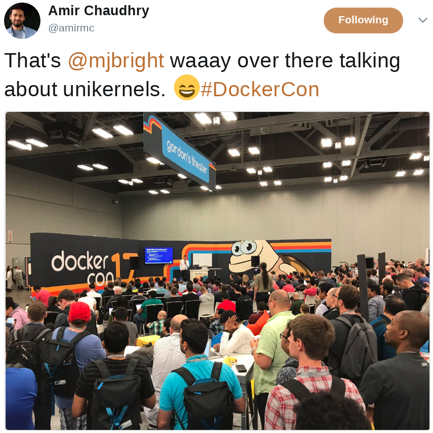

|  |
|
| Event | Date | Contribution | Title (URL) | Source Code | Video | Speakers | |
|---|---|---|---|---|---|---|---|
| Future Talks | |||||||
| - | - | - | - | - | - | - | - |
| 2018 | |||||||
| CodeEurope.pl | Apr 2018 | Talk | Developing Micro-services with Kubernetes | PDF Slides online |
Demo source | Video (TODO) | Michael Bright |
| FLOSSAsia | Mar 2018 | Lab | Kubernetes Tutorial | TUTORIAL | Video | Michael Bright | |
| FLOSSAsia | Mar 2018 | Talk | Serverless | SRC | Video | Michael Bright | |
| DevConf.cz | 27 Jan 2018 | Lab | Kubernetes Tutorial | TUTORIAL | Michael Bright | ||
| DevConf.cz | 27 Jan 2018 | Talk | Serverless | PDF Slides online |
Michael Bright | ||
| DevConf.cz | 28 Jan 2018 | Talk | Unikernels: In Action | PDF Slides online |
Michael Bright | ||
| Flosscon v0, Grenoble | 19 January | Tutorial | Kubernetes Tutorial | - Slides Online |
TUTORIAL | - | Michael Bright |
| Flosscon v0, Grenoble | 19 January | Presentation | FaaS (aka Functions as a Service ou Serverless) | PDF Slides online |
Sources | - | Michael Bright |
| 2017 | |||||||
| Open Source Summit, Prague | 24 October | Presentation | Serverless - Is It For Your Organization? | PDF (renders badly) Slides online |
Sources | - | Michael Bright |
| Open Source Summit, Prague | 25 October | Presentation | Container Orchestration: The State of Play | PDF Slides online |
Sources | - | Michael Bright |
| Open Source Summit, Prague | 25 October | Tutorial | Container Orchestration: Hands On with the Technologies | - | Materials (notebooks) | - | Michael Bright |
| RMLL, St-Etienne | 3 July 2017 | Presentation | Unikernels: What Usage? | PDF
Slides online |
Slides source | Michael Bright | |
| RMLL, St-Etienne | 3 July 2017 | Tutorial | Docker and Python, Python and Docker | PDF
Slides online |
Slides source
SRC notebook |
Michael Bright | |
| PyCon US | 17 May 2017 | Tutorial | Container Orchestration | SRC | Michael Bright, Haikel Guemar | ||
| PyCon US | 18 May 2017 | Tutorial | IPython and Jupyter in Depth: High productivity, interactive Python | SRC | Michael Bright, Matthias Buissonier, Min RK | ||
| DockerCon US | 19 Apr 2017 | Talk | Lightning Talk: Unikernel Technologies | Youtube Video | Michael Bright | ||
| HPE TES | 22 Mar 2017 | Talk | Unikernel Technologies | HTML Slides | - | Michael Bright | |
| Snowcamp.io | 10 Feb 2017 | Talk | Unikernels: The Next Big Little Thing? | - | Michael Bright | ||
| DevConf.cz | 27 Jan 2017 | Lab | Container Orchestration | SRC | Video | Michael Bright, Mario Loriedo | |
| DevConf.cz | 29 Jan 2017 | Talk | Unikernels: The Next Big Little Thing? | - | Video | Michael Bright | |
| 2016 | |||||||
| Linux/ContainerConEurope | 5 Oct 2016 | Lab | Container Orchestration: Lab (Swarm, Kubernetes, Mesos) | - | Michael Bright, Haikel Guemar, Mario Loriedo | ||
| Linux/ContainerConEurope | 4 Oct 2016 | Talk | Container Orchestration: Which Conductor? | - | Michael Bright, Haikel Guemar, Mario Loriedo | ||
| EuroPython 2016 | 22 Jul 2016 | Talk | Jupyter for Everything Else | - | Video | Michael Bright | |
| EuroPython 2016 | 18 Jul 2016 | Lab | Ipython in Depth Tutorial | - | Michael Bright | ||
| 2015 | |||||||
| Pyconfr, Pau 2015 | Oct 2015 | Talk | IPython vers Jupyter </a> | Video | Michael Bright |